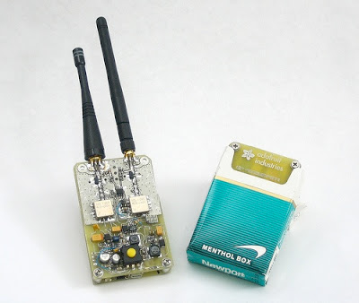

Dear Folks,
May I sincerely wish you as bad a year in 2009 as we had in 2008. I say that, not because I wish you ill, but because I have a sneaking suspicion that 2009's going to make 2008 look like the good old days. In any case, may God's blessings be upon you this coming year. May He help you to stand.
Mike Vanderboegh
III
Wednesday, December 31, 2008
Screw Bass Pro Shops and the Elmer Fudd Horse They Rode In On
Well, folks, I finally took the plunge and went into the new Bass Pro Shop in Leeds, Alabama. I made the mistake of going up to the rifle counter. There were at the time five folks behind the counter with two customers at the knife case being taken care of by one employee. The other four scurried back and forth behind the counter, doing their dead-level best to ignore me, the only other customer.
Finally I announced to the knife customers, "You know I don't have to put up with this, I can go home and be ignored by EXPERTS." Still, I had to walk the length of the counter and track down two of these "customer service" types.
"Excuse me," I interjected, are you out of AR-15s?"
One counter guy gave me the old fisheye, and announced with a sniff, "WE do NOT stock 'assault rifles.'" (He said the name sneeringly, with emphasis.) "We only carry SPORTING weapons."
I looked him dead in the fisheye and replied, "Now you're startin' to piss me off. Not 'sporting weapons'? I'll tell you what, sport. When they ban semi-auto rifles, they will immediately BECOME 'sporting weapons.' It will be open season on politicians then with no limit. Now that's MY kind of game, Mr. Fudd."
I don't think he got the 'Mr. Fudd,' but I turned and walked away, to the laughs and agreement of two other customers who had arrived.
It'll be the LAST time I darken their door.
Finally I announced to the knife customers, "You know I don't have to put up with this, I can go home and be ignored by EXPERTS." Still, I had to walk the length of the counter and track down two of these "customer service" types.
"Excuse me," I interjected, are you out of AR-15s?"
One counter guy gave me the old fisheye, and announced with a sniff, "WE do NOT stock 'assault rifles.'" (He said the name sneeringly, with emphasis.) "We only carry SPORTING weapons."
I looked him dead in the fisheye and replied, "Now you're startin' to piss me off. Not 'sporting weapons'? I'll tell you what, sport. When they ban semi-auto rifles, they will immediately BECOME 'sporting weapons.' It will be open season on politicians then with no limit. Now that's MY kind of game, Mr. Fudd."
I don't think he got the 'Mr. Fudd,' but I turned and walked away, to the laughs and agreement of two other customers who had arrived.
It'll be the LAST time I darken their door.
Tuesday, December 30, 2008
Samuel Huntington's Warning

It is my hypothesis that the fundamental source of conflict in this new world will not be primarily ideological or primarily economic. The great divisions among humankind and the dominating source of conflict will be cultural. Nation-states will remain the most powerful actors in world affairs, but the principal conflicts of global politics will occur between nations and groups of different civilizations. The clash of civilizations will dominate global politics. The fault lines between civilizations will be the battle lines of the future. --- Samuel P. Huntington, The Clash of Civilizations, 1993.
Samuel Phillips Huntington died last week on Christmas Eve at his home in Martha's Vineyard, Massachussetts. He was 81. The man is gone, yet the warning sounded by his scholarship still reverberates, and will continue to do so in our future. Take Huntington's warning above. "The great divisions among humankind and the dominating source of conflict will be cultural."
Is this not the basis of conflict today WITHIN our country? Increasingly we find ourselves in intractible political arguments because we have entirely different cultural world views. In 2004, Huntington said this:
Cultural America is under siege. And as the Soviet experience illustrates, ideology is a weak glue to hold together people otherwise lacking racial, ethnic, and cultural sources of community —— Who Are We? America's Great Debate, p.12, 2004.
"Ideology is a weak glue to hold a people together." Yes. Particularly when we do not even agree on the character of our OWN ideology. The political left has spent the last 60 years or so kicking the the props out from under the old verities of the Founders Republic. Western Civilization, by their moral equivalence, bears the same validity as the belief system of the most bloodthirsty Aztec heart carver. Samuel Huntington thought differently.
For his pains he was denounced, pilloried and even threatened by the academic collectivists in this country. Yet his vindication will be that he will prove to be right, even if the correctness of his vision means the downfall of our country and of Western Civilization. This need not be, and only will be if we allow it.
Fouad Ajami wrote what is, I think, the best of Huntington's obituaries here. I reprint it below in full.
DECEMBER 30, 2008
Samuel Huntington's Warning
He predicted a 'clash of civilizations,' not the illusion of Davos Man.
By FOUAD AJAMI
The last of Samuel Huntington's books -- "Who Are We? The Challenges to America's National Identity," published four years ago -- may have been his most passionate work. It was like that with the celebrated Harvard political scientist, who died last week at 81. He was a man of diffidence and reserve, yet he was always caught up in the political storms of recent decades.
"This book is shaped by my own identities as a patriot and a scholar," he wrote. "As a patriot I am deeply concerned about the unity and strength of my country as a society based on liberty, equality, law and individual rights." Huntington lived the life of his choice, neither seeking controversies, nor ducking them. "Who Are We?" had the signature of this great scholar -- the bold, sweeping assertions sustained by exacting details, and the engagement with the issues of the time.
He wrote in that book of the "American Creed," and of its erosion among the elites. Its key elements -- the English language, Christianity, religious commitment, English concepts of the rule of law, the responsibility of rulers, and the rights of individuals -- he said are derived from the "distinct Anglo-Protestant culture of the founding settlers of America in the seventeenth and eighteenth centuries."
Critics who branded the book as a work of undisguised nativism missed an essential point. Huntington observed that his was an "argument for the importance of Anglo-Protestant culture, not for the importance of Anglo-Protestant people." The success of this great republic, he said, had hitherto depended on the willingness of generations of Americans to honor the creed of the founding settlers and to shed their old affinities. But that willingness was being battered by globalization and multiculturalism, and by new waves of immigrants with no deep attachments to America's national identity. "The Stars and Stripes were at half-mast," he wrote in "Who Are We?", "and other flags flew higher on the flagpole of American identities."
Three possible American futures beckoned, Huntington said: cosmopolitan, imperial and national. In the first, the world remakes America, and globalization and multiculturalism trump national identity. In the second, America remakes the world: Unchallenged by a rival superpower, America would attempt to reshape the world according to its values, taking to other shores its democratic norms and aspirations. In the third, America remains America: It resists the blandishments -- and falseness -- of cosmopolitanism, and reins in the imperial impulse.
Huntington made no secret of his own preference: an American nationalism "devoted to the preservation and enhancement of those qualities that have defined America since its founding." His stark sense of realism had no patience for the globalism of the Clinton era. The culture of "Davos Man" -- named for the watering hole of the global elite -- was disconnected from the call of home and hearth and national soil.
But he looked with a skeptical eye on the American expedition to Iraq, uneasy with those American conservatives who had come to believe in an "imperial" American mission. He foresaw frustration for this drive to democratize other lands. The American people would not sustain this project, he observed, and there was the "paradox of democracy": Democratic experiments often bring in their wake nationalistic populist movements (Latin America) or fundamentalist movements (Muslim countries). The world tempts power, and denies it. It is the Huntingtonian world; no false hopes and no redemption.
In the 1990s, when the Davos crowd and other believers in a borderless world reigned supreme, Huntington crossed over from the academy into global renown, with his "clash of civilizations" thesis. In an article first published in Foreign Affairs in 1993 (then expanded into a book), Huntington foresaw the shape of the post-Cold War world. The war of ideologies would yield to a civilizational struggle of soil and blood. It would be the West versus the eight civilizations dividing the rest -- Latin American, African, Islamic, Sinic, Hindu, Orthodox, Buddhist and Japanese.
In this civilizational struggle, Islam would emerge as the principal challenge to the West. "The relations between Islam and Christianity, both orthodox and Western, have often been stormy. Each has been the other's Other. The 20th-century conflict between liberal democracy and Marxist-Leninism is only a fleeting and superficial historical phenomenon compared to the continuing and deeply conflictual relation between Islam and Christianity."
He had assaulted the zeitgeist of the era. The world took notice, and his book was translated into 39 languages. Critics insisted that men want Sony, not soil. But on 9/11, young Arabs -- 19 of them -- would weigh in. They punctured the illusions of an era, and gave evidence of the truth of Huntington's vision. With his typical precision, he had written of a "youth bulge" unsettling Muslim societies, and young, radicalized Arabs, unhinged by modernity and unable to master it, emerging as the children of this radical age.
If I may be permitted a personal narrative: In 1993, I had written the lead critique in Foreign Affairs of his thesis. I admired his work but was unconvinced. My faith was invested in the order of states that the West itself built. The ways of the West had become the ways of the world, I argued, and the modernist consensus would hold in key Third-World countries like Egypt, India and Turkey. Fifteen years later, I was given a chance in the pages of The New York Times Book Review to acknowledge that I had erred and that Huntington had been correct all along.
A gracious letter came to me from Nancy Arkelyan Huntington, his wife of 51 years (her Armenian descent an irony lost on those who dubbed him a defender of nativism). He was in ill-health, suffering the aftermath of a small stroke. They were spending the winter at their summer house on Martha's Vineyard. She had read him my essay as he lay in bed. He was pleased with it: "He will be writing you himself shortly." Of course, he did not write, and knowing of his frail state I did not expect him to do so. He had been a source of great wisdom, an exemplar, and it had been an honor to write of him, and to know him in the regrettably small way I did.
We don't have his likes in the academy today. Political science, the field he devoted his working life to, has been in the main commandeered by a new generation. They are "rational choice" people who work with models and numbers and write arid, impenetrable jargon.
More importantly, nowadays in the academy and beyond, the patriotism that marked Samuel Huntington's life and work is derided, and the American Creed he upheld is thought to be the ideology of rubes and simpletons, the affliction of people clinging to old ways. The Davos men have perhaps won. No wonder the sorrow and the concern that ran through the work of Huntington's final years.
Mr. Ajami is professor of Middle East Studies at The Johns Hopkins University, School of Advanced International Studies. He is also an adjunct research fellow at Stanford University's Hoover Institution.
Praxis: Guerrilla Gadgets
My thanks to cycjec for tipping me to this open source for guerrilla gadgets. Let your imagination wander.
Arduino based UAVs - Open source "unmanned aerial vehicles"
ArduiPilot - Navigation for UAVs
ArduPilot is an inexpensive navigation-only autopilot based on the open-source Arduino platform. It is currently in beta. In fall 2008, it will be available as an easy-to-assemble kit (PCB with SMD parts already soldered, plus a few through-hold parts to solder yourself as required).
Price: $30.00
BlimpDuino - Open source blimp UAV
BlimpDuino is a very low cost open source autonomous blimp. It consists of an Arduino-based blimp controller board with on-board infrared and ultrasonic sensors and an interface for an optional RC mode, a simple gondola with two vectoring (tilting) differential thrusters, and ground-based infrared beacon. It will be available as a commercial kit, complete with a mylar envelope.
Features:
17 grams, with ultrasonic and IR sensors.
Controls two motors and one vectoring servo.
Built-in RC compatibility (can read two RC channels--throttle and steering)
Designed for a 7.4v LiPo battery; has an automatic power cut-off at low voltage to protect the battery
Price: Approx: $100
Paparazzi - Open autopilot system
Paparazzi is a free and open-source hardware and software project intended to create an exceptionally powerful and versatile autopilot system by allowing and encouraging input from the community. The project includes not only the airborne hardware and software, from voltage regulators and GPS receivers to Kalman filtering code, but also a powerful and ever-expanding array of ground hardware and software including modems, antennas, and a highly evolved user-friendly ground control software interface. All hardware and software is open-source and freely available to anyone under the GNU licencing agreement.
Price: $ various - also check out PPZUAV.
Open GPS tracker - Open tracking!
The Open GPS Tracker is a small device which plugs into a $20 prepaid mobile phone to make a GPS tracker. The Tracker responds to text message commands, detects motion, and sends you its exact position, ready for Google Maps or your mapping software. The Tracker firmware is open source and user-customizable.
Price: $75.00
Open source hardware for "Spy Tech" and trouble makers
WaveBubble - Open source cell phone, Wi-Fi jammer
A self-tuning, wide-bandwidth portable RF jammer. The device is lightweight and small for easy camouflaging: it is the size of a pack of cigarettes. An internal lithium-ion battery provides up to 2 hours of jamming (two bands, such as cell) or 4 hours (single band, such as cordless phone, GPS, WiFi, bluetooth, etc). The battery is rechargeable via a mini-USB connector or 4mm DC jack (a common size).
Alternately, 3 AAA batteries may also be used. Output power is .1W (high bands) and .3W (low bands). Effective range is approximately 20' radius with well-tuned antennas. Less so with the internal antennas or poorly matched antennas. Self-tuning is provided via dual PLL, therefore, no spectrum analyzer is necessary to build this jammer and a single Wave Bubble can jam many different frequency bands - unlike any other design currently available! To reconfigure the RF bands, simply plug it into the USB port of your PC and type in the new frequencies when prompted. Multiple frequency ranges can be programmed in, each time the device is power cycled it will advance to the next program in memory.
Price: Not for sale directly, parts / everything... about $200
SIM Card reader kit - Hack your cell phone's SIM card, really delete messages!
This is a SIM card reader/writer for experimentation and investigation of SIM & Smart cards. Once the kit is built, accompanying software can be used to read and write from the card. Together they can be used to backup stored SIM card data, recover deleted SMS's and phone contacts, examine the last 10 phone numbers dialed, etc. (Despite being called a SIM reader, it can also write to SIM cards) The kit includes PCB and components. Basic hand tools, 9V battery, SIM card and serial cable are not included. This project is fairly easy and can be built within an hour, even if you've never soldered before!
Price: $17.00
TV-B-Gone - Turn any TV off!
Tired of all those LCD TVs everywhere? Want a break from advertisements while you're trying to eat? Want to zap screens from across the street? The TV-B-Gone kit is what you need! Hack it! This ultra-high-power, open source kit version of the popular TV-B-Gone is fun to make and even more fun to use. A very simple kit and great for people who have never soldered anything before.
Arduino based UAVs - Open source "unmanned aerial vehicles"

ArduiPilot - Navigation for UAVs
ArduPilot is an inexpensive navigation-only autopilot based on the open-source Arduino platform. It is currently in beta. In fall 2008, it will be available as an easy-to-assemble kit (PCB with SMD parts already soldered, plus a few through-hold parts to solder yourself as required).
Price: $30.00

BlimpDuino - Open source blimp UAV
BlimpDuino is a very low cost open source autonomous blimp. It consists of an Arduino-based blimp controller board with on-board infrared and ultrasonic sensors and an interface for an optional RC mode, a simple gondola with two vectoring (tilting) differential thrusters, and ground-based infrared beacon. It will be available as a commercial kit, complete with a mylar envelope.
Features:
17 grams, with ultrasonic and IR sensors.
Controls two motors and one vectoring servo.
Built-in RC compatibility (can read two RC channels--throttle and steering)
Designed for a 7.4v LiPo battery; has an automatic power cut-off at low voltage to protect the battery
Price: Approx: $100

Paparazzi - Open autopilot system
Paparazzi is a free and open-source hardware and software project intended to create an exceptionally powerful and versatile autopilot system by allowing and encouraging input from the community. The project includes not only the airborne hardware and software, from voltage regulators and GPS receivers to Kalman filtering code, but also a powerful and ever-expanding array of ground hardware and software including modems, antennas, and a highly evolved user-friendly ground control software interface. All hardware and software is open-source and freely available to anyone under the GNU licencing agreement.
Price: $ various - also check out PPZUAV.

Open GPS tracker - Open tracking!
The Open GPS Tracker is a small device which plugs into a $20 prepaid mobile phone to make a GPS tracker. The Tracker responds to text message commands, detects motion, and sends you its exact position, ready for Google Maps or your mapping software. The Tracker firmware is open source and user-customizable.
Price: $75.00
Open source hardware for "Spy Tech" and trouble makers


WaveBubble - Open source cell phone, Wi-Fi jammer
A self-tuning, wide-bandwidth portable RF jammer. The device is lightweight and small for easy camouflaging: it is the size of a pack of cigarettes. An internal lithium-ion battery provides up to 2 hours of jamming (two bands, such as cell) or 4 hours (single band, such as cordless phone, GPS, WiFi, bluetooth, etc). The battery is rechargeable via a mini-USB connector or 4mm DC jack (a common size).
Alternately, 3 AAA batteries may also be used. Output power is .1W (high bands) and .3W (low bands). Effective range is approximately 20' radius with well-tuned antennas. Less so with the internal antennas or poorly matched antennas. Self-tuning is provided via dual PLL, therefore, no spectrum analyzer is necessary to build this jammer and a single Wave Bubble can jam many different frequency bands - unlike any other design currently available! To reconfigure the RF bands, simply plug it into the USB port of your PC and type in the new frequencies when prompted. Multiple frequency ranges can be programmed in, each time the device is power cycled it will advance to the next program in memory.
Price: Not for sale directly, parts / everything... about $200

SIM Card reader kit - Hack your cell phone's SIM card, really delete messages!
This is a SIM card reader/writer for experimentation and investigation of SIM & Smart cards. Once the kit is built, accompanying software can be used to read and write from the card. Together they can be used to backup stored SIM card data, recover deleted SMS's and phone contacts, examine the last 10 phone numbers dialed, etc. (Despite being called a SIM reader, it can also write to SIM cards) The kit includes PCB and components. Basic hand tools, 9V battery, SIM card and serial cable are not included. This project is fairly easy and can be built within an hour, even if you've never soldered before!
Price: $17.00

TV-B-Gone - Turn any TV off!
Tired of all those LCD TVs everywhere? Want a break from advertisements while you're trying to eat? Want to zap screens from across the street? The TV-B-Gone kit is what you need! Hack it! This ultra-high-power, open source kit version of the popular TV-B-Gone is fun to make and even more fun to use. A very simple kit and great for people who have never soldered anything before.
Duty: "We did not want him carried out with just a sheet."

Lance Cpl. Jordan Haerter, 19, had just arrived in Iraq.
Folks,
Sometimes words fail me.
My thanks to Three Percenter Julian for drawing this to my attention. The original LA Times story below is here.
Mike
III

Cpl. Jonathan Yale was respected for his quiet, efficient manner.
Fallen Marines to be awarded Navy Cross
Cpl. Jonathan Yale and Lance Cpl. Jordan Haerter saved Iraqi police and fellow Marines from a truck-driving suicide bomber, Marine brass say. The April attack could have slain dozens.
By Tony Perry
December 29, 2008
Reporting from San Diego -- They had known each other only a few minutes, but they will be linked forever in what Marine brass say is one of the most extraordinary acts of courage and sacrifice in the Iraq war.
Cpl. Jonathan Yale, 21, grew up poor in rural Virginia. He had joined the Marine Corps to put structure in his life and to help support his mother and sister. He was within a few days of heading home.
Lance Cpl. Jordan Haerter, 19, was from a comfortably middle-class suburb on Long Island. As a boy, he had worn military garb, and he had felt the pull of adventure and patriotism. He had just arrived in Iraq.
On April 22, the two were assigned to guard the main gate to Joint Security Station Nasser in Ramadi, the capital of Anbar province, once an insurgent stronghold and still a dangerous region. Dozens of Marines and Iraqi police lived at the compound, and some were still sleeping after all-night patrols when Yale and Haerter reported for duty that warm, sultry morning.
Yale, respected for his quiet, efficient manner, was assigned to show Haerter how to take over his duties.
Haerter had volunteered to watch the main gate, even though it was considered the most hazardous of the compound's three guard stations because it could be approached from a busy thoroughfare.
The sun had barely risen when the two sentries spotted a 20-foot-long truck headed toward the gate, weaving with increasing speed through the concrete barriers. Two Iraqi police officers assigned to the gate ran for their lives. So did several Iraqi police on the adjacent street.
Yale and Haerter tried to wave off the truck, but it kept coming. They opened fire, Yale with a machine gun, Haerter with an M-16. Their bullets peppered the radiator and windshield. The truck slowed but kept rolling.
A few dozen feet from the gate, the truck exploded. Investigators found that it was loaded with 2,000 pounds of explosives and that its driver, his hand on a "dead-man switch," was determined to commit suicide and slaughter Marines and Iraqi police.
The thunderous explosion rocked much of Ramadi, interrupting the morning call to prayers from the many mosques. A nearby mosque and a home were flattened. The blast ripped a crater 5 feet deep and 20 feet across into the street.
Shards of concrete scattered everywhere, and choking dust filled the air.
Haerter was dead; Yale was dying.
Three Marines about 300 feet away were injured. So were eight Iraqi police and two dozen civilians.
But several dozen other nearby Marines and Iraqi police, while shaken, were unhurt. A Black Hawk helicopter was summoned in a futile attempt to get Yale to a field hospital in time. A sheet was placed over Haerter.
When it was considered safe to take Haerter's body to a second helicopter, his section leader insisted he be covered by an American flag. "We did not want him carried out with just a sheet," said Staff Sgt. Kenneth Grooms.
Maj. Gen. John Kelly, the top Marine in Iraq, wanted to know how the attack happened. Like many veteran Marines, he is haunted by the memory of the 1983 bombing of the barracks in Beirut, when a blast from an explosives-laden truck killed 241 U.S. service personnel, including 220 Marines.
Not given to dark thoughts or insecurities, Kelly, who commanded Marines in the fight for Baghdad and Tikrit in 2003 and Fallouja in 2004, admits that the specter of another Beirut gives him nightmares as he commands the 22,000 Marines in Iraq.
He went to Ramadi to interview Iraqi witnesses -- a task generals usually delegate to subordinates.
Some Iraqis told him they were incredulous that the two Marines had not fled.
When Marine technicians restored a damaged security camera, the images were undeniable.
While Iraqi police fled, Haerter and Yale had never flinched and never stopped firing as the Mercedes truck -- the same model used in the Beirut bombing -- sped directly toward them.
Without their steadfastness, the truck would probably have penetrated the compound before it exploded, and 50 or more Marines and Iraqis would have been killed. The incident happened in just six seconds.
"No time to talk it over; no time to call the lieutenant; no time to think about their own lives or even the American and Iraqi lives they were protecting," Kelly said. "More than enough time, however, to do their duty. They never hesitated or tried to escape."
Kelly nominated the two for the Navy Cross, the second-highest award for combat bravery for Marines and sailors. Even by the standards expected of Marine "grunts," their bravery was exceptional, Kelly said.
The Haerter and Yale families will receive the medals early next year.
On the night after the bombing, Kelly wrote to each family that though he never knew its Marine, "I will remember him, and pray for him and for all those who mourn his loss, for the rest of my life."
A motorcade escorted Haerter's casket through Sag Harbor on Long Island, as residents lined the streets and wept and saluted.
Yale's casket made the 83-mile trip from the airport at Richmond, Va., to Farmville with an honor guard provided by the Patriot Guard Riders, a motorcycle group of former service members.
"He's not supposed to be dead," said the Rev. Leon Burchett, who did the eulogy at Yale's funeral and in whose home Yale had often lived as a teenager. "The casket was flag-draped but it couldn't be opened. There's no closure -- it's like we're still waiting for him to come home."
On Long Island, a bridge was renamed for Haerter. His high school put a flag from his funeral in a time capsule. His family set up a memorial website, www.jordanhaerter.com.
At a Wounded Warrior Project event, Haerter's mother, JoAnn Lyles, her voice breaking, talked of how she had hoped to do something special for his 20th birthday. "We now know that Jordan -- Lance Cpl. Jordan C. Haerter -- was already a man, a courageous and brave young man."
Their battalions are now back at Camp Lejeune, N.C. -- for Haerter, the 1st Battalion, 9th Regiment; for Yale, the 2nd Battalion, 8th Regiment. In Iraq, both units were part of the Camp Pendleton-based Regimental Combat Team One.
Yale's unit was within a week of going home when the attack occurred. His death seemed to deflate its sense of achievement.
"The Marines were very upset and very disappointed because of the effort they had made to make a better life for the Iraqis and then to have this happen," said Capt. Matthew Martin, Yale's company commander.
Haerter's unit had just arrived for a seven-month deployment, and officers tried to make sure his death did not unduly distract the Marines.
"It's something you don't get over," said Lt. Dan Runzheimer, 24, Haerter's platoon leader.
"I wouldn't say it put a cloud on us, but it was always there. The men still knew what they had to do: You have to . . . complete the mission."
As both battalions train for possible deployment to Iraq or Afghanistan, the deaths of their comrades are still in their thoughts.
Yale was always trying to boost the morale of his buddies, said Lance Cpl. Brandon Creely, 21, of Boise, Idaho. "Whenever I was down, he'd tell a joke, tell me it's not as bad as it seems."
Staff Sgt. Grooms, 28, said he knows how Haerter should be remembered.
"He was a hero," Grooms said, "and a damn fine person."
tony.perry@latimes.com
"We rationalized every new outrage."

Original boxcar that brought Jews to Auschwitz in 1942
Folks,
My post on the Bielski brothers' fight produced this reminiscence from my long-time friend John Russell, who hails from West Texas and is now is the senior national correspondent for IRN/USA Radio News. Though based in Memphis, says John, "We provide top and bottom of the hour news and other programming for over 2600 radio stations throughout the United States both secular and religious."
Dear Mike,
I may have told this story before, if so please indulge me. When I was in my 20's my mother introduced me to a retired professor of mathematics who had survived Auschwitz. We became friends and would meet every so often at a deli and drink coffee (no milk) and sort out the world's problems.
I made a point of not bringing up the horrors he experienced in the camps. One afternoon my friend began to relate his story with the narrative ending with his coming to the United States.
It was at this point that I asked the question that had bothered me from the time my father had first told me about the Nazi's treatment of the Jews.
"Professor, the Krauts would have to shoot me on the train platform before they could stuff me and my family into a cattle car. Just what hell were you people thinking? Couldn't you see what had to be obvious, that these people were monsters? My G-d if just one of you disarmed a guard and put a round through his head, even if you didn't escape, at least you could die upright on your terms instead of theirs."
This was his answer.
"We could not bring ourselves to believe the reality of what we were seeing. We rationalized every new outrage. We told ourselves that Germany, even under the Nazis, was an advanced nation and that the madness was temporary. Besides every where we looked there were, still visible, the landmarks of civilization, church spires and the university towers. As far as offering armed resistance, who knew guns? Sure there were Jews who once served Germany as soldiers. Some were given medals for bravery. Hell the officer who got that rat Hitler his Iron Cross was Jewish. Most of us however were not fighters, besides when the Nurnberg laws came down we acted like all good Germans and turned in our guns. Its not like we had a choice. The police knew who had guns and we Jews didn't want to antagonize the Nazis."
He went on, this time a little more reflective. "Maybe, because of our segregation from most of the culture and our relatively small numbers us we always believed that no one could be left behind or not have his voice heard. Perhaps we were too willing to hear and take the counsel of the fearful. Any way that was the way it was."
"One last question, do you know how to shoot now?"
"Yes" he said "and so does the Mrs."
"What about your son?" He grinned widely "The Marines taught him. They like that their officers should know how to use a rifle. He also knows how to use a tank, he's a good boy."
I left that city not long after and lost track of my friend. And now I see the beginnings of that old disease of hatred directed at the chosen of G-d. You can see it on college campuses and in the establishment media. But I know this, at least some of Abraham's long suffering progeny will not go quietly into boxcars. No, not this time.
More on Holder: "Single Bullet Arlen" to the "Rescue"
Go to Pete's Western Rifle Shooters Association blog here and read his post updating the fight against the Holder nomination. He has an excellent template for a letter to your own Senator(s) about this law-breaking collectivist puke that Obama wants to thrust into the Number One Cop spot.
On a more cautionary note, it seems that Arlen Spector, GOP senator from Pennsylvania (note I do not call him "Republican" for that would be a profanation of that word), is jumping in to lead the "fight" against Holder.
I qualify the term "fight" because I remember too well the questions that Spector, who first came to public attention during the Warren Commission investigation of the Kennedy assassination by advancing the "single bullet theory", refused to ask during the Waco and Ruby Ridge hearings. If you are waiting for Single Bullet Arlen to ask the ultimately tough questions necessary to derail Holder's nomination you are trusting in hope over experience.
We'd better pray that Larry Pratt at GOA is able to find a senator on the Judiciary Committee who can ask those questions, because history shows that Spector will let us down.
On a more cautionary note, it seems that Arlen Spector, GOP senator from Pennsylvania (note I do not call him "Republican" for that would be a profanation of that word), is jumping in to lead the "fight" against Holder.
I qualify the term "fight" because I remember too well the questions that Spector, who first came to public attention during the Warren Commission investigation of the Kennedy assassination by advancing the "single bullet theory", refused to ask during the Waco and Ruby Ridge hearings. If you are waiting for Single Bullet Arlen to ask the ultimately tough questions necessary to derail Holder's nomination you are trusting in hope over experience.
We'd better pray that Larry Pratt at GOA is able to find a senator on the Judiciary Committee who can ask those questions, because history shows that Spector will let us down.
Monday, December 29, 2008
An Outstanding LTE by Russ Stewart on the "Loophole"
Folks,
I first spotted this over at, of all places, Sebastian's Snowflakes in Hell blog, where even more amazingly he commented positively on it. Then I noted that David Codrea also linked it on his War on Guns. This is an outstanding letter explaining to the public just why the "gunshow loophole" is so dangerous. Threepers should use it as a template for their own LTEs to local papers.
Mike
III
Published December 28 2008
Local view: Firearms prohibitionists take their meddling to people’s living rooms
By: Russ Stewart , Duluth News Tribune
A week before Minnesota’s firearm deer season I visited my 86-year-old father. He regaled me with an entertaining stream of tales from his 70 years as a deer hunter in the north woods. He lamented his failing eyesight and then rose from his ancient recliner and went to the closet where he keeps his guns. He took out a battered old case and handed it me. “I want you to have this.”
I knew what was inside. A Savage model 219 single-shot 30-30 rifle. My father bought it in 1944 for $12. It’s well worn after more than 60 years of hard use. It was an honor to be given such an heirloom. Over the past few years my father has passed on most of his modest collection of firearms to his children and grandchildren. It is his way of passing on our family’s heritage.
However, if some people had their way, my father would be a felon the next time he passed on a firearm to a family member. These people complain about a so-called “gun show loophole,” which, if you were to accept the rhetoric of firearm prohibitionists, is responsible for an endless stream of death and carnage.
In truth, attempts to close the “loophole” are really attacks on cherished freedoms that have been quietly enjoyed by millions of Americans since the founding of our nation. With the exception of those unfortunate residents of a few nanny-states, citizens of the U.S. always have been able to gift, buy, sell and trade firearms without the interference of government.
But if people like Duluth’s Joan Peterson, a member of the national board of trustees of the Brady Campaign to Prevent Gun Violence (and the author of the Dec. 9 Local View commentary, “ ‘Gun show loophole,’ still open in Minnesota, must be closed”) are able to enact their legislative agenda, this liberty will be extinguished. The sad part is that if they are successful, crime rates would be unaffected. It is well established that only a tiny fraction of guns used to commit crimes come from gun shows. But that doesn’t stop the prohibitionists from scaring people with exaggerated stories.
Peterson wrote that we need to pass a law to “require unlicensed sellers to perform background checks on buyers at gun shows and other venues.” What she didn’t write was that these “other venues” include my father’s living room. The proposed legislation requires a background check for every private firearm bought, sold or gifted. So when Peterson claimed the proposed law “wouldn’t change anything for law-abiding citizens,” she was simply wrong.
Another thing firearm prohibitionists won’t tell you is that in order for a universal background check system to be effective, every gun would need to be registered with the government.
There are those who would take offense at my use of the term “prohibitionist” to describe members of groups like the Brady Campaign to Prevent Gun Violence and the Northland Million Moms, but actions speak louder than words. While speaking of “reasonable gun laws,” they advocate a program of incremental prohibition of private firearm ownership.
Our nation already has more than 20,000 laws relating to firearms, and 99 percent of them are an affront to liberty. As new laws are introduced in response to Brady Campaign scare tactics, I am reminded of the words of Ben Franklin: “They who would give up an essential liberty for temporary security deserve neither liberty nor security.”
I’ve got news for the prohibitionists of the world. My father won’t give up his freedom to pass on his legacy without government interference — and neither will I, nor will my family, nor my friends. Nor will millions of other freedom-loving citizens. The passage of a new set of gun-control laws would simply create a new class of felons out of formerly law-abiding citizens.
And that may have a set of unintended consequences all its own.
RUSS STEWART of Duluth served two terms on the City Council and is a professor at Lake Superior College.
I first spotted this over at, of all places, Sebastian's Snowflakes in Hell blog, where even more amazingly he commented positively on it. Then I noted that David Codrea also linked it on his War on Guns. This is an outstanding letter explaining to the public just why the "gunshow loophole" is so dangerous. Threepers should use it as a template for their own LTEs to local papers.
Mike
III
Published December 28 2008
Local view: Firearms prohibitionists take their meddling to people’s living rooms
By: Russ Stewart , Duluth News Tribune
A week before Minnesota’s firearm deer season I visited my 86-year-old father. He regaled me with an entertaining stream of tales from his 70 years as a deer hunter in the north woods. He lamented his failing eyesight and then rose from his ancient recliner and went to the closet where he keeps his guns. He took out a battered old case and handed it me. “I want you to have this.”
I knew what was inside. A Savage model 219 single-shot 30-30 rifle. My father bought it in 1944 for $12. It’s well worn after more than 60 years of hard use. It was an honor to be given such an heirloom. Over the past few years my father has passed on most of his modest collection of firearms to his children and grandchildren. It is his way of passing on our family’s heritage.
However, if some people had their way, my father would be a felon the next time he passed on a firearm to a family member. These people complain about a so-called “gun show loophole,” which, if you were to accept the rhetoric of firearm prohibitionists, is responsible for an endless stream of death and carnage.
In truth, attempts to close the “loophole” are really attacks on cherished freedoms that have been quietly enjoyed by millions of Americans since the founding of our nation. With the exception of those unfortunate residents of a few nanny-states, citizens of the U.S. always have been able to gift, buy, sell and trade firearms without the interference of government.
But if people like Duluth’s Joan Peterson, a member of the national board of trustees of the Brady Campaign to Prevent Gun Violence (and the author of the Dec. 9 Local View commentary, “ ‘Gun show loophole,’ still open in Minnesota, must be closed”) are able to enact their legislative agenda, this liberty will be extinguished. The sad part is that if they are successful, crime rates would be unaffected. It is well established that only a tiny fraction of guns used to commit crimes come from gun shows. But that doesn’t stop the prohibitionists from scaring people with exaggerated stories.
Peterson wrote that we need to pass a law to “require unlicensed sellers to perform background checks on buyers at gun shows and other venues.” What she didn’t write was that these “other venues” include my father’s living room. The proposed legislation requires a background check for every private firearm bought, sold or gifted. So when Peterson claimed the proposed law “wouldn’t change anything for law-abiding citizens,” she was simply wrong.
Another thing firearm prohibitionists won’t tell you is that in order for a universal background check system to be effective, every gun would need to be registered with the government.
There are those who would take offense at my use of the term “prohibitionist” to describe members of groups like the Brady Campaign to Prevent Gun Violence and the Northland Million Moms, but actions speak louder than words. While speaking of “reasonable gun laws,” they advocate a program of incremental prohibition of private firearm ownership.
Our nation already has more than 20,000 laws relating to firearms, and 99 percent of them are an affront to liberty. As new laws are introduced in response to Brady Campaign scare tactics, I am reminded of the words of Ben Franklin: “They who would give up an essential liberty for temporary security deserve neither liberty nor security.”
I’ve got news for the prohibitionists of the world. My father won’t give up his freedom to pass on his legacy without government interference — and neither will I, nor will my family, nor my friends. Nor will millions of other freedom-loving citizens. The passage of a new set of gun-control laws would simply create a new class of felons out of formerly law-abiding citizens.
And that may have a set of unintended consequences all its own.
RUSS STEWART of Duluth served two terms on the City Council and is a professor at Lake Superior College.
Defiance: "Without a rifle you are nothing, worthless, you are waiting for death, any minute, any second."

"That is the first and foremost lesson of the Holocaust to be learned. For all the unanswered moral, philosophical and theological questions-- the bottom line is that millions of Jews were killed, because they could be. The only true defense against a Holocaust is the ability to resist and to survive one."
One of the routine stops I make when I visit my parents in central Ohio is the Village Bookshop in Linworth, a suburb of Columbus. It is a remainder house, selling many obscure but important titles on all manner of subjects. In May of 1995, for the princely sum of $9.98 I picked up a copy of Nechama Tec's "Defiance: The Bielski Partisans -- The Story of the Largest Armed Rescue of Jews by Jews During World War II."
Ten bucks was a lot for me to pay for a book back then, but after reading the book, I didn't regret it. From the dust jacket:
The prevailing image of European Jews during the Holocaust years is one of helpless victims under a death sentence, unable to fight consignment to the ghettos, to the camps, and to the gas chambers. In fact, many Jews struggled alone or with others against the terrors of the Third Reich, risking their lives against overwhelming odds for the slimmest chance of survival or a mere glimpse of freedom. In Defiance Nechama Tec offers a riveting history of one such group, a forest community in western Belorussia that would number 1,200 Jews by 1944 -- the largest armed rescue operation of Jews by Jews in World War II.
Describing the entire partisan movement in the region, Tec shows that while most forest fighters in Belorussia were rifle-carrying young men, the members of this extraordinary community included both men and women, some with weapons but mostly unarmed, ranging from infants to the elderly. She reconstructs for the first time the amazing details of how these partisans and their families -- hungry, exposed to the harsh winter weather, always on the lookout for German patrols -- managed not only to survive, but to offer protection to all Jewish fugitives who could find their way to them. Driven by courage born out of despair, they dug wells, set up workshops to repair guns, make clothes, and resole shoes, supplied services to other guerrilla units, and even established a makeshift hospital and school in the forest. Arguing that this success would have been unthinkable without the vision of one man, Tec offers penetrating insight into the group's commander, Tuvia Bielski, and his journey from his life as the son of the only Jewish peasant family in an isolated rural village to his emergence as a leader possessing the charisma and courage to command under all but impossible circumstances.
Tec brings to light the untold story of Bielski's struggle as a partisan who lost his parents, his wife, and two brothers to the Nazis, yet never wavered in his conviction that it was more important to save one Jew than to kill twenty Germans. She shows how, under Bielski's guidance, the partisans smuggled Jews our of heavily guarded ghettos, sciouted the roads for fugitives, and led retaliatory raids against Belorussian peasants who collaborated with the Nazis against their former Jewish neighbors. Refusing to turn away the weak or the old for the sake of the survival of the larger group, Bielski would warn new arrivals to the forest, "Life is difficult, we are in danger all the time, but if we perish, if we die, we die like human beings."
A scholar, a writer, and herself a Holocaust survivor, author Nechama Tec has devoted the last two decades to studying the fate of European Jewry, recording rare but vital examples of human compassion, resistance, altruism and heroism in the face of overwhelming horror and despair. Drawing on wide-ranging research and never before published interviews with surviving partisans -- including Tuvia Bielski himself two weeks before his death in 1987 -- she reconstructs here the poignant and unforgettable story of those who chose to fight.
See why I bought the book? Although dust jackets are often the best part of some books, this one did not disappoint. So when I heard that they were making a movie about the Bielski Partisans, I was both excited and apprehensive. Hollywood has an almost limitless capacity for screwing up the best books -- David Brin's The Postman comes immediately to mind. But if you read the review below here it would seem that, much like Valkyrie, Hollywood has once again given us Three Percenters a movie that will reinforce our message.
And when Charles Schumer and Diane Feinstein see this movie will they get the point? Not bloody likely. Read the book before seeing the movie, not only to understand where Hollywood screwed up, but to internalize the message that may be glossed over: that the only truly free men and women are those who are armed and thus possess the means of ensuring their own liberty and survival.
Mike Vanderboegh
III
Here is the review from the sultanknish blog:
Defiance and the Holocaust at the Movies
"Without a rifle you are nothing, worthless, you are waiting for death, any minute, any second." - Aron Bielski
"My father sent my mother a revolver as a gift, which for her was the symbol of what any young girl wants in a marriage, this was for her the means to stay alive, to kill herself or to die fighting." -- Assaela Bielski
Last week I had the opportunity to attend a screening of Defiance, based on the Oxford Press book, Defiance, the Bielski Partisans by Nechama Tec. For those who have the time, I would recommend the book over the movie, as the former is a real history of events, and the latter is a fictionalized Hollywood adaptation of them.
Nechama Tec's book, Defiance, the Bielski Partisans is a realistic but excellently written retelling of how the Bielski Otriad operated in the real world, its dedication to rescuing Jews, from refugees in hiding, to reaching inside Ghettos themselves, as well as dealing with its controversies.
In contrast to the movie, Nechama Tec's Defiance is a nuts and bolts look at life in the woods from multiple perspectives. It is not an exercise in romanticism, but in realism.
The story of the Bielskis is one of those stories of the Holocaust that is overshadowed by the general narrative of victimization and therefore rarely told, as compared to the depictions of Jews as helpless victims or dependent on non-Jewish saviors, ala Schindler's List. The story of the Bielskis is not a story of the Holocaust, so much as it is the story of how the Bielskis and those who worked with them broke through the helplessness, and took action to save thousands and keep them alive in hostile territory.
In contrast to the movie's portrayal of him, Tuvia Bielski is not a modern morally conflicted hero nor a misguided idealist. The book is less about personalities than it is about what was accomplished in the forest. Yet even the movie provides something deeply valuable in the portrayal of the Holocaust.
Liberal culture has made the Holocaust into a narrative of victimization that can only be undone by tolerance. Defiance, in both book and movie form, turns into a narrative of accomplishment by a few in the face of a seemingly unstoppable enemy. The Jews of Defiance are not victims, they are taught to take responsibility for their survival by the Bielskis. They do not simply wait for the war to be over, but Tec's book documents how they rescue other Jews, and they fight back, blowing up trains, and hitting Nazi targets.
The conventional narrative of the Holocaust, both liberal and religious, is one of learned helplessness, of martyrdom, either in the name of tolerance, or holiness. Defiance instead upends that in favor of competence, of taking responsibility for one's own survival and that of others, and making a difference. It is the conceptual idea behind the State of Israel, and so unsurprisingly one of the forest encampments was called "Jerusalem in the Woods."
The usual liberal narrative teaches that when tolerance fails, a Holocaust happens. But tolerance is relative, while competence is objective. Understanding what the Bielski Otriad accomplished is far more important to understanding how to deal with the persecution of Jews, than all the narratives of atrocities and massacres, which memorialize the dead, but fail to draw any useful lessons from what happened to them. And the only useful lesson that can be drawn from the Holocaust, is how to survive it and defeat it.
Watching Defiance made me think of how fundamentally wrong most other movies have gotten the Holocaust. The poster child of all of them of course was Schindler's List, a grandstanding and hollow project, whose two major stars played Germans on opposite sides of the Holocaust, and whose them was about the importance of doing the right thing. But movie after movie has followed a similar pattern, turning the Holocaust into a vehicle for communicating something uplifting about the human spirit, and the general wonderfulness of humans, when they aren't busy shoving other humans into gas chambers or dark pits. Jakob the Liar, Life is Beautiful, The Pianist all suffer from that same need to turn an atrocity into something meaningful.
Defiance though is one of the few Holocaust movies, that is actually a war movie. It is not about finding meaning, as much as it is about the hard realities of survival, and what must be done to survive. Being a Hollywood movie it still suffers from the need to insert uplifting messages about the human spirit, but these quickly pass. But they quickly pale beside the reality of the choices that the Bielski brothers need to make. As often as the movie attempts to "straighten out" the story by directing it along a politically correct route, the truth of the real story bends it back to where it began.
The Bielski brothers are no saints, but start out as smugglers who end up using their survival skills to gather a large community of survivors under them. At times they're ruthless and like everyone else, they're walking wounded, dealing with the loss of their families, while being expected to make impossible decisions that mean life and death for everyone around them. But there are no therapists in the forest, only life and death decisions.
Much as the score layers on inappropriately uplifting music and the writing summons the occasional inspirational line about hope, faith and humanity-- Defiance's heart is in the forest where the needs are primitive and survival rests on the ability to get food and weapons and to stay ahead of the Germans and their local police collaborators.
And stripped of all the questions and philosophical musings, Defiance is one of the few movies to deal with what the Holocaust was about. Surviving. The Holocaust boils down to the simple fact that many of the groups who hated the Jews got a chance to kill them, under the leadership of German Fascism and administered with ruthless technical precision. Reactions across the Jewish populations covered a wide gamut that history has barely scratched, from apathy to flight, to denial to collaboration, to resistance.
The Bielskis and the fighters, criminals and working class youth, have the survival skills that the Malbushim, the middle and upper class university educated Jews do not. That meant knowing how to use a gun, how to find your way through the woods, how to build working shelters and ultimately how to survive by making ad hoc decisions under pressure. It also meant being able to eat anything and make food out of anything, including a horse and a dog, to rob and to kill. There is nothing "natively" uplifting about any of that. It is simply what it takes to survive.
And that, rather than the uplifting messages, serves as the real lesson of the Holocaust. You either survive, or you don't. The Holocaust is not a call for tolerance or for sanctifying victimization, those are the liberal American Jewish fallacies. The Holocaust was a wake up call, warning that none of the strategies that Jews had used until now, negotiation, waiting, appeasement, all defense reactions had been nullified. You could give up, run if you could, or fight to survive.
Israel was built on the understanding that the time for running was over. It was time to get serious about being a nation, or live as hunted animals the world over. The American liberal Jewish consensus by contrast was built on the belief that the best way to prevent a Holocaust was to teach people to love each other and find something uplifting in it all, thus buying into the culture of victimization. Defiance tries to reach for the latter position, but finds itself stuck in the former camp instead. Because as many noble and uplifting things that Tuvia can say, the Bielskis, both the real and the fictional film versions, were no liberals.
The movie portrays a tug of war between the two older Bielski brothers, over focusing on pure resistance or rescuing people. But that division leads both brothers to disaster, as Tuvia discovers that he needs his sibling's ruthlessness and Zus' participation in a Russian partisan unit leads to the realization that the Communists have just as little use for the Jews as the Nazis do. The balance of Tuvia's idealism and Zus' cynical killing edge defines the conflict, as Tuvia discovers that he must be hard and brutal in order to do good, and Zus discovers that killing without a people of his own to protect is a cold and soulless task.
Though the movie may insert inappropriate comic relief and its versions of the Bielski brothers are at times so incompetent that they would not have survived for a week, let alone for years, it does what Holocaust movies all too often avoid doing, it focuses on the survival. The Germans, when they arrive, are soldiers in gray moving in and out. The locals collaborate or don't, for their own reasons. There is no moral to be learned, except that if you want to live and want others to live, you must be prepared to do what it takes.
That is the first and foremost lesson of the Holocaust to be learned. For all the unanswered moral, philosophical and theological questions-- the bottom line is that millions of Jews were killed, because they could be. The only true defense against a Holocaust is the ability to resist and to survive one. Before the State of Israel was officially declared, the Bielskis made their own Jewish state in a forest, to live as free men and women mere kilometers from their would be killers, and though like the real state and its real leaders, they may have been flawed, their triumph is not some uplifting moral, but a matter of accomplishment, the 1200 they hid in the forest against all odds, and through determination and hard work, they did not become victims or fatalities, they survived. And through their guidance and efforts so did 1200 others. No higher praise is needed.
Sunday, December 28, 2008
"Brothers in Arms": My Nomination for Gun Store Owner of the Year

General Laney, owner of Laney’s Guns and Supplies, the last gun store in Detroit.
‘Your honor, when you’re dead and in your grave, when you feel that water coming in, it will not be rain. That will be me pissing on you.’
Folks,
Read this and tell me I'm wrong. Of course you're welcome to make your own nominations, but I'm sticking with General Laney. Here's some excerpts:
“Does anybody here have a problem with taking a life?” asks 69-year-old General Laney, owner of Laney’s Guns and Supplies on Detroit’s east side. “If you’re not capable of taking a life then you’re not in the right place,” he warns, “’cause you might have to take a life. You have no choice because the person who wants to take your life has no feeling for you.”
Laney should know — he was once shot six times.
Laney’s teaching a self-defense and concealed weapons (CCW) permit class. The students look uneasy at times.
Aside from an old house, his store’s the lone building on the block. It’s along a terrible stretch of Chene that was once part of Poletown but now is part of an urban prairie. In a town full of guns, Laney’s is the only place left where you can buy them legally within city limits.
Laney’s sells firearms and ammunition, hosts the aforementioned classes, and has a shooting range in the basement for which you can rent guns. From the 1920s until he bought it, the building housed a billiards room — it was a place to shoot pool and shoot guns. . .
His core belief is that gun laws target blacks. “Gun control in Detroit is racist to begin with. You heard of Dr. Sweet?” he asks, referring to the case of Ossian Sweet, a black physician who, with his family, was tried and eventually acquitted for shooting into a mob that attacked their home when they moved into an all-white neighborhood in 1925.
Soon after, the state passed stringent gun-control laws, known as Public Act 372 of 1927. Laney sees those laws aimed squarely at blacks, a reaction to the verdict. “After the Sweet case, the Michigan Legislature said we couldn’t allow black people to have guns, and that’s how Michigan gun laws come about.”
“Gun control is race control,” he adds. “It has been that way to keep blacks in servitude.” Another hero of his is Robert F. Williams, a 1960s advocate of armed self-defense for the black community and an inspiration to the Black Panthers. . .
Laney has become nationally notorious in the gun industry for his views, eventually drawing the law’s attention. In 1999, six years after he bought the place, the Wayne County Sheriff’s Office sent an undercover cop into the store to make a “straw” purchase, in which a qualified buyer purchases a weapon on behalf of someone who can’t legally buy it — in this case it was another cop posing as a minor. The sting resulted in charges against Laney and two other gun shops. Laney fought the well-documented case all the way to the Michigan Supreme Court and was exonerated. He says he spent $50,000 on legal bills defending himself.
“They tried to set me up,” he claims. “It’s a moral victory.” A gun group gave him a trophy consisting of two brass balls to commemorate his tenacity. “It’s a thing that should never have come to court anyway. When court was over I said, ‘Your honor, when you’re dead and in your grave, when you feel that water coming in, it will not be rain. That will be me pissing on you.’”
Saturday, December 27, 2008
Quotes upon the theme of "Democracy"
Found here.
My favorite --
"If pigs could vote, the man with the slop bucket would be elected swineherd every time, no matter how much slaughtering he did on the side." -- Orson Scott Card
My favorite --
"If pigs could vote, the man with the slop bucket would be elected swineherd every time, no matter how much slaughtering he did on the side." -- Orson Scott Card
Praxis: Winter Kit
A Wolverine forwards this checklist for the winter kit of a unit that operates in the great north woods. I present it here for discussion purposes.
Individual Trooper
Rations
MRE's (6)
Comfort Food Packs (3)
Vitamins (Extra Vitamin C) 4 days
Tea/Hot Cider Bags (12)
Water (2 Quarts - Minimum)
Combat Load
Harness
Web belt
Ammo Pouch - 2
Combat Knife
Bandoleers - Loaded
Flashlight
Compass & Protractor
Winter Camouflage & Loam Face Paint
Wind Proof Lighter (check fuel)
Fire Starter
Ear Plugs
Individual First Aid Kit
Knee Pads
Tomahawk
Existence Load
Ruck Sack
E-tool
Mechanical Pencil / Space Pen
Toilet Paper (1 roll)
BDU's (1 in ruck)
Sweater
Heavy Socks (2 in ruck/1 on)
Lng Underwear - ( 2 in ruck/1 on)
Underwear (2 in ruck/1 on)
T-Shirts (2 in ruck/1 on)
Towel
Wash cloth
Fingerless gloves
Watch Cap
Field Jacket w/liner
Sleeping Bag (AO Dep ECW rating)
Thermarest/Sleeping pad
Personal Hygeine Kit w/sanitary wipes
Dust/Wind Goggles (Fog Proofed)
Parka/Heavy Gloves/Insulated Hat
Snow Shoes
Snow Poles
Gaiters & Ice Crampons (Optional)
Range Finder (Optional)
Arctic Canteen (2)
Weapons & Ammo
Rifle
10 Magazines
400 rounds
Combat Knife
Sidearm (Optional)
3 Magazines
50 rounds
Cleaning Kit
Cleaning Rod
Solvent
Spare Rifle Parts
Cleaning Patches
Shelter
Heavy Poncho w/poles & stakes
Survival Saw
Single Burner Stove w/fuel (Optional)
Ground Poncho
Large Medical Kit (Team)
Cleaning Patches (all calibers)
Individual Trooper
Rations
MRE's (6)
Comfort Food Packs (3)
Vitamins (Extra Vitamin C) 4 days
Tea/Hot Cider Bags (12)
Water (2 Quarts - Minimum)
Combat Load
Harness
Web belt
Ammo Pouch - 2
Combat Knife
Bandoleers - Loaded
Flashlight
Compass & Protractor
Winter Camouflage & Loam Face Paint
Wind Proof Lighter (check fuel)
Fire Starter
Ear Plugs
Individual First Aid Kit
Knee Pads
Tomahawk
Existence Load
Ruck Sack
E-tool
Mechanical Pencil / Space Pen
Toilet Paper (1 roll)
BDU's (1 in ruck)
Sweater
Heavy Socks (2 in ruck/1 on)
Lng Underwear - ( 2 in ruck/1 on)
Underwear (2 in ruck/1 on)
T-Shirts (2 in ruck/1 on)
Towel
Wash cloth
Fingerless gloves
Watch Cap
Field Jacket w/liner
Sleeping Bag (AO Dep ECW rating)
Thermarest/Sleeping pad
Personal Hygeine Kit w/sanitary wipes
Dust/Wind Goggles (Fog Proofed)
Parka/Heavy Gloves/Insulated Hat
Snow Shoes
Snow Poles
Gaiters & Ice Crampons (Optional)
Range Finder (Optional)
Arctic Canteen (2)
Weapons & Ammo
Rifle
10 Magazines
400 rounds
Combat Knife
Sidearm (Optional)
3 Magazines
50 rounds
Cleaning Kit
Cleaning Rod
Solvent
Spare Rifle Parts
Cleaning Patches
Shelter
Heavy Poncho w/poles & stakes
Survival Saw
Single Burner Stove w/fuel (Optional)
Ground Poncho
Large Medical Kit (Team)
Cleaning Patches (all calibers)
"The Unwritten Constitution"
“The 'Unwritten Constitution' refers to the ideas and processes that are accepted as a needed part of American government, regardless of the fact that they are not actually in the Constitution. These ideas and processes came about through the custom and precedent. Many aspects of the unwritten Constitution are so ingrained into our system that many do not even realize that they are not laws or provisions of the Constitution.” -- RegentsPrep.org.
I am a Christian. The fact that I am not the best representative of that manner of man should not obscure that my critique of the present state of mundane affairs proceeds from that basis. From time to time, I am accused of seeking to impose a theocratic state upon my fellow citizens, mostly because I have the temerity to mention God and the Founders' Republic in the same sentence.
As a Christian, some of my fellow Three Percenters who are agnostic libertarians suspect my motives and constantly question me as to what sort of "restoration end game" I see at the end of our struggle. Some fear, as with most revolutions, that the victors will fall to fighting amongst themselves over the character of the Restoration. This is possible, I suppose, but it need not be. In the unlikely event that I survive to see it, this is the Restoration I would battle toward:
I think we can agree that the natural rights of all men and women and which are merely codified in the Constitution extend to all regardless of race, creed, color or religion, even if that religion is no religion at all. The original sin of the Founders, slavery, has been expiated over the past two-plus centuries. As George Mason predicted, God does not judge nations in Heaven, but on earth, and we have been fully disciplined by the iron rod of history for the Founders' error.
In addition, we must agree that free men cannot remain free without free markets, which includes property rights protected by the rule of law. I happen to believe that Christianity is the philosophical basis of free market capitalism, an argument which I will not spend time on here but which is made by the Acton Institute here.
These rights extend to our philosophical enemies and unlike them, we should be worthy of the Founders' trust that we can be counted upon to stand by their design without monkeying with it to achieve a desired result. I would be happy if the last bastion of collectivism is represented by one bitter old professor flogging Marxian doctrine in some musty university classroom, but if that is so, he must have the liberty to be wrong. It is the bitter experience of the past century that teaches us that such collectivists cannot be trusted with power themselves. That they would be fully discredited in the marketplace of ideas and the arena of politics after having made the grab for ultimate power and by doing so sparked a bloody but (to them) failed civil war is, I think, a given. Perhaps I am an optimist.
But that is what comes from being a Christian. We are the eternal optimists even when the Romans are shoveling us into the lion's mouth. We know, because Christ told us so, that our side wins in the end. We also know that we will be around to see it, if we remain faithful to our beliefs. And it is these beliefs which are the foundation upon which Western Civilization was constructed and upon which it must always rest if it is to survive.
M. Stanton Evans makes this point powerfully in his book The Theme is Freedom: Religion, Politics, and the American Tradition found here.
Two other works which have influenced me greatly (and thus I recommend highly) are:
Lex, Rex, or The Law and the Prince by the Reverend Samuel Rutherford, 1644 here. (Subsequent Editorial Note: Just received this note from a long-time GOA member -- "Mike, the GOA bookstore offers Lex Rex for $11.50. I love it when we can beat out Amazon - in this case by a whopping percentage." The GOA bookstore is here.)
And,
From Tyndale to Madison: How the Death of an English Martyr Led to the American Bill of Rights by Michael Farris here.
But it is not necessary to spend one's ammunition money for the next month to acquaint yourself with this point of view. I have recently been directed by my best friend to the website of Thomas Brewton, The View From 1776. As Brewton writes:
The View from 1776 presents a framework to understand present-day issues from the viewpoint of the colonists who fought for American independence in 1776 and wrote the Constitution in 1787. Knowing and preserving those understandings, what might be called the unwritten constitution of our nation, is vital to preserving constitutional government. Without them, the bare words of the Constitution are just a Rorschach ink-blot that politicians, educators, and judges can interpret to mean anything they wish.
"We have no government armed with the power capable of contending with human passions, unbridled by morality and true religion. Our constitution is made only for a moral and religious people. It is wholly inadequate to the government of any other." John Adams, to the Officers of the First Brigade, Third Division, Massachusetts Militia, October 11, 1798.
From that web site comes this discussion of "The Unwritten Constitution." I present it here for your consideration.
The Unwritten Constitution
The United States was founded on the Judeo-Christian ethic that historically was the substance of Western civilization. Ours was a specifically English conception of individual morality and individual responsibility that, only in England and its North American colonies, had produced a government of laws, not men, a government in which even the king is subject to the statutes of the land and to a higher moral law.
This conception of government necessitates a citizenry self-regulated by moral precepts that are preserved and taught by religion. The government must similarly be restrained by the limits of natural law, which say that no legitimate government may infringe any individual's rights to life, liberty, and private property.
No society can survive without a consensus about right and wrong, about what constitutes moral conduct. That consensus is the unwritten constitution of society, the content that gives meaning to a written constitution, the meat on the bones of the structure of government.
Opposing our original conception of government is the liberal jihad, driven by the ideology of socialism, sometimes called The Religion of Humanity. This religion was formalized in the 1789 French Revolution, the same year that our Constitution was ratified and became the law of the land.
Socialism is a secular religion. Like Islamic suicide bombers, liberals are so firmly persuaded that their cause is right, good, and just that they are prepared to go to any lengths necessary to destroy the Judeo-Christian ethic of individual morality and replace it with a rigidly regulated National-State collectivism, of which Nazi Germany and Soviet Russia were extreme examples.
The religion of socialism is being taught unconstitutionally, at your expense, in public schools and colleges receiving Federal aid. Teaching the religious doctrine of socialism as scientific fact amounts to making liberal-socialism the officially established religion of the United States.
The only constitutional way to stop the liberal jihad is to force schools to present both sides of the story, traditionalist, as well as liberal. Publicly funded schools now teach only the amoral, secular materialism of the socialist religion. Schools no longer present true versions of American history and of our original ideas of civic virtue and personal morality that are historically the substance of Western civilization. Penetrating the shield of socialist teachers' unions and the politicians whom they help elect is a very long-term project, but a vital one.
The largest volume of immigration in the nation's history, both legal and illegal, coupled with liberals' relentless efforts to destroy America's original traditions of individual morality, leaves us with no core values and a diminishing will to defend ourselves against foreign enemies.
The unwritten constitution of 1776 expressly or implicitly comprehended the following elements:
-- A philosophical view, reaching back to Plato and Aristotle, that humans, indeed all creatures and things, had inherent natures that implied certain ends or goals, a highest and best role in life. There was consequently a natural law based on an understanding of human nature, from which flowed precepts of civic virtue, morality, and ethics. In the pursuit of these truths lay humanity's greatest happiness and highest good.
-- Acceptance of personal responsibility for one's actions and belief that each individual was to be guided by his own conscience.
-- Belief in inalienable natural law rights of human beings, summed up as life, liberty, and property. The key concept was inviolability of personal property rights, without which individuals could not survive nor maintain their individuality and personal liberties against an arbitrary and abusive political power. If people cannot control the purse-strings and deny money to the king, they cannot protect their individual rights. Money-power is their only leverage, short of armed rebellion. That is what Magna Carta was all about. Forty-seven of its sixty-three articles are concerned with private property rights against the crown. A socialist government like our New Deal upends this by taking a large portion of people’s disposable income as taxes and making them dependent upon the National State for their needs.
-- A preference for government motivated by aspiration towards civic virtue and morality; a government of limited powers curbed by a higher law, the natural law rights of mankind.
-- An expectation that government would be essentially a protective shell against foreign aggressors, especially to prevent interference with ocean commerce or invasion from foreign countries. Within that shell, little was expected from the government, with hardly any day-to-day impact on the lives of ordinary Americans. More than anything else, domestically, citizens wanted to be free from arbitrary interference with their individual rights and their private property.
-- Readiness to fight for their legal and political rights as Englishmen, which were embodied in the unwritten British constitution that included the common law, Magna Carta, the 1628 Petition of Right, and the 1689 English Bill of Rights, as well as in their colonial charters.
-- A perspective of justice in the classical Greek model of proportionality, in keeping with the nature of human beings and human society. People were to be rewarded in ratio to the competence and importance of their work and to the effort and skill it required. Justice was a fair price for a good product. Justice was also viewed as adherence to laws of society that accorded with natural law.
Americans in 1776 would have rejected the opposing theory of liberal social-justice under which everyone, without regard to his personal contribution to society, is entitled to equal access to all of the goods and services produced by people who work for a living.
-- Aversion to hereditary class privilege and a preference for reward based on personal merit and hard work; tenacious awareness of equality before the law and of their rights, as Englishmen, under the common law and all Parliamentary statutes that protected individuals and their property from arbitrary exercise of authority.
-- Strong self-reliance and individualism; pioneering spirit; opportunity to do one's best and to go as high as one's talents and luck would carry.
-- Openness to science, inventiveness, and readiness to experiment with new methods. Newton's laws of motion that made the universe seem like a great clockwork devised by God had a clear influence upon the conception of internal structures and balances in the organs of government set forth in the Constitution.
-- A Judeo-Christian, predominantly Protestant, belief that the world was a divine creation in which man was subject to the God-given laws of nature. Legitimacy of statute laws enacted by the people's representatives depended upon their conforming to principles of human nature created by God. Religion was seen as the safekeeper of ethical values and as the teacher of those values to society.
-- A clear awareness that a government of powers limited by inalienable individual rights could not survive unless the people were equally self-restrained by fidelity to principles of individual morality, responsibility, and civic virtue.
-- A strong commitment to the Moral Sense theory of ethics taught by English and Scottish philosophers like the Earl of Shaftesbury, Francis Hutcheson, and Adam Smith (yes, the same Adam Smith who wrote the celebrated "Wealth of Nations"). These thinkers had somewhat different ideas about the origin of moral sentiments, but the common denominator was that benevolence was the most important characteristic to be fostered by society. John Witherspoon, a Scotsman who had studied under Francis Hutcheson, became President of Princeton, where he taught the theory of moral sentiments to James Madison. Madison was arguably the most important single contributor to the writing of the Constitution, and later was President of the United States.
-- Religious toleration, which was, by 1776, perceived as an essential policy if the colonists were to live together. America had more Protestant religious sects than anywhere else in the world. This tremendous diversity of doctrinal belief was itself one of the most powerful forces for individualism and democratic liberty.
-- Piety, not in the sense of religious ritual, but in the original Roman sense of reverence and respect for the traditions of the past and a feeling of responsibility to preserve those traditions for future generations.
-- A belief, based on religion, natural law, and moral philosophy, that all humans are equal in the sight of God, regardless of race, nationality, or station in life.
Slavery clearly violated this precept, and many people said so. As early as 1724 the Quakers formally denounced slavery, and Rhode Island outlawed it in 1774, followed by many other states in the north. In the 1787 Constitutional Convention there was lengthy debate in which most delegates favored outlawing slavery. Only the necessity of political compromise to retain the support of all thirteen states preventing the outlawing of slavery. The Constitution did, however, establish a date beyond which the slave trade would be forbidden, the only measure upon which all states could agree. Ultimately the Civil War, the bloodiest war in history at that date, abolished the practice altogether.
-- A view of humanity and the universe as a series of dualities: soul and body, heaven and earth, good and evil. Humans had the potential for being the best or the worst of creatures. Desires of the flesh produced undesirable qualities like laziness, selfishness, sexual promiscuity, and indulgence in drugs or alcohol.
Aspirations of the soul produced the moral virtues. Religion, morality, and civic virtue were counterpoised against tendencies of the body to amoral evil. Civilization depended upon the triumph of the former.
From: http://www.thomasbrewton.com/index.php/weblog/Core-Principles/
I am a Christian. The fact that I am not the best representative of that manner of man should not obscure that my critique of the present state of mundane affairs proceeds from that basis. From time to time, I am accused of seeking to impose a theocratic state upon my fellow citizens, mostly because I have the temerity to mention God and the Founders' Republic in the same sentence.
As a Christian, some of my fellow Three Percenters who are agnostic libertarians suspect my motives and constantly question me as to what sort of "restoration end game" I see at the end of our struggle. Some fear, as with most revolutions, that the victors will fall to fighting amongst themselves over the character of the Restoration. This is possible, I suppose, but it need not be. In the unlikely event that I survive to see it, this is the Restoration I would battle toward:
I think we can agree that the natural rights of all men and women and which are merely codified in the Constitution extend to all regardless of race, creed, color or religion, even if that religion is no religion at all. The original sin of the Founders, slavery, has been expiated over the past two-plus centuries. As George Mason predicted, God does not judge nations in Heaven, but on earth, and we have been fully disciplined by the iron rod of history for the Founders' error.
In addition, we must agree that free men cannot remain free without free markets, which includes property rights protected by the rule of law. I happen to believe that Christianity is the philosophical basis of free market capitalism, an argument which I will not spend time on here but which is made by the Acton Institute here.
These rights extend to our philosophical enemies and unlike them, we should be worthy of the Founders' trust that we can be counted upon to stand by their design without monkeying with it to achieve a desired result. I would be happy if the last bastion of collectivism is represented by one bitter old professor flogging Marxian doctrine in some musty university classroom, but if that is so, he must have the liberty to be wrong. It is the bitter experience of the past century that teaches us that such collectivists cannot be trusted with power themselves. That they would be fully discredited in the marketplace of ideas and the arena of politics after having made the grab for ultimate power and by doing so sparked a bloody but (to them) failed civil war is, I think, a given. Perhaps I am an optimist.
But that is what comes from being a Christian. We are the eternal optimists even when the Romans are shoveling us into the lion's mouth. We know, because Christ told us so, that our side wins in the end. We also know that we will be around to see it, if we remain faithful to our beliefs. And it is these beliefs which are the foundation upon which Western Civilization was constructed and upon which it must always rest if it is to survive.
M. Stanton Evans makes this point powerfully in his book The Theme is Freedom: Religion, Politics, and the American Tradition found here.
Two other works which have influenced me greatly (and thus I recommend highly) are:
Lex, Rex, or The Law and the Prince by the Reverend Samuel Rutherford, 1644 here. (Subsequent Editorial Note: Just received this note from a long-time GOA member -- "Mike, the GOA bookstore offers Lex Rex for $11.50. I love it when we can beat out Amazon - in this case by a whopping percentage." The GOA bookstore is here.)
And,
From Tyndale to Madison: How the Death of an English Martyr Led to the American Bill of Rights by Michael Farris here.
But it is not necessary to spend one's ammunition money for the next month to acquaint yourself with this point of view. I have recently been directed by my best friend to the website of Thomas Brewton, The View From 1776. As Brewton writes:
The View from 1776 presents a framework to understand present-day issues from the viewpoint of the colonists who fought for American independence in 1776 and wrote the Constitution in 1787. Knowing and preserving those understandings, what might be called the unwritten constitution of our nation, is vital to preserving constitutional government. Without them, the bare words of the Constitution are just a Rorschach ink-blot that politicians, educators, and judges can interpret to mean anything they wish.
"We have no government armed with the power capable of contending with human passions, unbridled by morality and true religion. Our constitution is made only for a moral and religious people. It is wholly inadequate to the government of any other." John Adams, to the Officers of the First Brigade, Third Division, Massachusetts Militia, October 11, 1798.
From that web site comes this discussion of "The Unwritten Constitution." I present it here for your consideration.
The Unwritten Constitution
The United States was founded on the Judeo-Christian ethic that historically was the substance of Western civilization. Ours was a specifically English conception of individual morality and individual responsibility that, only in England and its North American colonies, had produced a government of laws, not men, a government in which even the king is subject to the statutes of the land and to a higher moral law.
This conception of government necessitates a citizenry self-regulated by moral precepts that are preserved and taught by religion. The government must similarly be restrained by the limits of natural law, which say that no legitimate government may infringe any individual's rights to life, liberty, and private property.
No society can survive without a consensus about right and wrong, about what constitutes moral conduct. That consensus is the unwritten constitution of society, the content that gives meaning to a written constitution, the meat on the bones of the structure of government.
Opposing our original conception of government is the liberal jihad, driven by the ideology of socialism, sometimes called The Religion of Humanity. This religion was formalized in the 1789 French Revolution, the same year that our Constitution was ratified and became the law of the land.
Socialism is a secular religion. Like Islamic suicide bombers, liberals are so firmly persuaded that their cause is right, good, and just that they are prepared to go to any lengths necessary to destroy the Judeo-Christian ethic of individual morality and replace it with a rigidly regulated National-State collectivism, of which Nazi Germany and Soviet Russia were extreme examples.
The religion of socialism is being taught unconstitutionally, at your expense, in public schools and colleges receiving Federal aid. Teaching the religious doctrine of socialism as scientific fact amounts to making liberal-socialism the officially established religion of the United States.
The only constitutional way to stop the liberal jihad is to force schools to present both sides of the story, traditionalist, as well as liberal. Publicly funded schools now teach only the amoral, secular materialism of the socialist religion. Schools no longer present true versions of American history and of our original ideas of civic virtue and personal morality that are historically the substance of Western civilization. Penetrating the shield of socialist teachers' unions and the politicians whom they help elect is a very long-term project, but a vital one.
The largest volume of immigration in the nation's history, both legal and illegal, coupled with liberals' relentless efforts to destroy America's original traditions of individual morality, leaves us with no core values and a diminishing will to defend ourselves against foreign enemies.
The unwritten constitution of 1776 expressly or implicitly comprehended the following elements:
-- A philosophical view, reaching back to Plato and Aristotle, that humans, indeed all creatures and things, had inherent natures that implied certain ends or goals, a highest and best role in life. There was consequently a natural law based on an understanding of human nature, from which flowed precepts of civic virtue, morality, and ethics. In the pursuit of these truths lay humanity's greatest happiness and highest good.
-- Acceptance of personal responsibility for one's actions and belief that each individual was to be guided by his own conscience.
-- Belief in inalienable natural law rights of human beings, summed up as life, liberty, and property. The key concept was inviolability of personal property rights, without which individuals could not survive nor maintain their individuality and personal liberties against an arbitrary and abusive political power. If people cannot control the purse-strings and deny money to the king, they cannot protect their individual rights. Money-power is their only leverage, short of armed rebellion. That is what Magna Carta was all about. Forty-seven of its sixty-three articles are concerned with private property rights against the crown. A socialist government like our New Deal upends this by taking a large portion of people’s disposable income as taxes and making them dependent upon the National State for their needs.
-- A preference for government motivated by aspiration towards civic virtue and morality; a government of limited powers curbed by a higher law, the natural law rights of mankind.
-- An expectation that government would be essentially a protective shell against foreign aggressors, especially to prevent interference with ocean commerce or invasion from foreign countries. Within that shell, little was expected from the government, with hardly any day-to-day impact on the lives of ordinary Americans. More than anything else, domestically, citizens wanted to be free from arbitrary interference with their individual rights and their private property.
-- Readiness to fight for their legal and political rights as Englishmen, which were embodied in the unwritten British constitution that included the common law, Magna Carta, the 1628 Petition of Right, and the 1689 English Bill of Rights, as well as in their colonial charters.
-- A perspective of justice in the classical Greek model of proportionality, in keeping with the nature of human beings and human society. People were to be rewarded in ratio to the competence and importance of their work and to the effort and skill it required. Justice was a fair price for a good product. Justice was also viewed as adherence to laws of society that accorded with natural law.
Americans in 1776 would have rejected the opposing theory of liberal social-justice under which everyone, without regard to his personal contribution to society, is entitled to equal access to all of the goods and services produced by people who work for a living.
-- Aversion to hereditary class privilege and a preference for reward based on personal merit and hard work; tenacious awareness of equality before the law and of their rights, as Englishmen, under the common law and all Parliamentary statutes that protected individuals and their property from arbitrary exercise of authority.
-- Strong self-reliance and individualism; pioneering spirit; opportunity to do one's best and to go as high as one's talents and luck would carry.
-- Openness to science, inventiveness, and readiness to experiment with new methods. Newton's laws of motion that made the universe seem like a great clockwork devised by God had a clear influence upon the conception of internal structures and balances in the organs of government set forth in the Constitution.
-- A Judeo-Christian, predominantly Protestant, belief that the world was a divine creation in which man was subject to the God-given laws of nature. Legitimacy of statute laws enacted by the people's representatives depended upon their conforming to principles of human nature created by God. Religion was seen as the safekeeper of ethical values and as the teacher of those values to society.
-- A clear awareness that a government of powers limited by inalienable individual rights could not survive unless the people were equally self-restrained by fidelity to principles of individual morality, responsibility, and civic virtue.
-- A strong commitment to the Moral Sense theory of ethics taught by English and Scottish philosophers like the Earl of Shaftesbury, Francis Hutcheson, and Adam Smith (yes, the same Adam Smith who wrote the celebrated "Wealth of Nations"). These thinkers had somewhat different ideas about the origin of moral sentiments, but the common denominator was that benevolence was the most important characteristic to be fostered by society. John Witherspoon, a Scotsman who had studied under Francis Hutcheson, became President of Princeton, where he taught the theory of moral sentiments to James Madison. Madison was arguably the most important single contributor to the writing of the Constitution, and later was President of the United States.
-- Religious toleration, which was, by 1776, perceived as an essential policy if the colonists were to live together. America had more Protestant religious sects than anywhere else in the world. This tremendous diversity of doctrinal belief was itself one of the most powerful forces for individualism and democratic liberty.
-- Piety, not in the sense of religious ritual, but in the original Roman sense of reverence and respect for the traditions of the past and a feeling of responsibility to preserve those traditions for future generations.
-- A belief, based on religion, natural law, and moral philosophy, that all humans are equal in the sight of God, regardless of race, nationality, or station in life.
Slavery clearly violated this precept, and many people said so. As early as 1724 the Quakers formally denounced slavery, and Rhode Island outlawed it in 1774, followed by many other states in the north. In the 1787 Constitutional Convention there was lengthy debate in which most delegates favored outlawing slavery. Only the necessity of political compromise to retain the support of all thirteen states preventing the outlawing of slavery. The Constitution did, however, establish a date beyond which the slave trade would be forbidden, the only measure upon which all states could agree. Ultimately the Civil War, the bloodiest war in history at that date, abolished the practice altogether.
-- A view of humanity and the universe as a series of dualities: soul and body, heaven and earth, good and evil. Humans had the potential for being the best or the worst of creatures. Desires of the flesh produced undesirable qualities like laziness, selfishness, sexual promiscuity, and indulgence in drugs or alcohol.
Aspirations of the soul produced the moral virtues. Religion, morality, and civic virtue were counterpoised against tendencies of the body to amoral evil. Civilization depended upon the triumph of the former.
From: http://www.thomasbrewton.com/index.php/weblog/Core-Principles/
Friday, December 26, 2008
"We Will Not Disarm"
My thanks to David Codrea for drawing my attention to this essay. It was written some time ago, but is still fresh and compelling.
Mike
III
Memorandum on Arms and Freedom
By Brian Puckett
It is time to speak plainly for the good citizens and patriots of this nation who believe unbendingly in the Constitution of the United States of America.
Though foreign governments may disarm their subjects, we will not go down that road. We will not disarm and see our freedoms stripped away. The lessons of history are numerous, clear and bloody. A disarmed population inevitably becomes an enslaved population. A disarmed population is without power, reduced to childlike obedience to--and dependence upon--the organs of a parental state. A disarmed population will lose--either piecemeal or in one sweeping act--those basic rights for which the citizens of America risked their lives and fortunes over two hundred years ago.
WE WILL NOT DISARM. The right to self-protection--the internal directive of every living creature, be it mouse or man--is the most fundamental right of all. It is a right that must be exercised against all predators of the streets, against the predators hidden within agencies of law enforcement, and against the most dangerous predators of all--those to be found in government, whose insidious grasping for power is relentless and never-ending.
WE WILL NOT DISARM. Not in the face of robbers, rapists, and murderers who prey upon our families and friends. Nor in the face of police and bureau agents who would turn a blind eye to the Constitution, who would betray the birthright of their countrymen; nor in the face of politicians of the lowest order--those who pander to the ignorant, the weak, the fearful, the naive; those indebted to a virulent strain of the rich who insulate themselves from the dangers imposed upon other Americans and then preach disarmament.
We will not surrender our handguns. We will not surrender our hunting arms. And we will not surrender our firearms of military pattern or military utility, nor their proper furnishings, nor the right to buy, to sell, or to manufacture such items.
Firearms of military utility, which serve well and nobly in times of social disturbance as tools of defense for the law-abiding, serve also in the quiet role of prevention, against both the criminal and the tyrannical. An ARMED CITIZENRY--the well-regulated MILITIA of the Second Amendment, properly armed with military firearms--is a powerful deterrent, on both conscious and subconscious levels, to those inclined toward governmental usurpations. An armed citizenry stands as a constant reminder to those in power that, though they may violate our rights temporarily, they will not do so endlessly and without consequence. And should Americans again be confronted with the necessity of--may God forbid it--throwing off the chains of a tyrannical and suffocating regime, firearms designed to answer the particular demands of warfare will provide the swiftest and most decisive means to this end. Any law which prohibits or limits a citizen's possession of firearms of military utility or their proper furnishings provides an OPEN WINDOW through which a corrupt government will crawl to steal away the remainder of our firearms and our liberties. Any law which prohibits or limits a citizen's possession of firearms of military utility or their proper furnishings, being directly contrary to the letter and spirit of the Second Amendment, is inimical to the Constitution, to the United States of America, and to its citizens.
Now--today--we are witnessing the perilous times foreseen by the architects of the Constitution. These are times when our government is demanding--in the guise of measures for the common good--the relinquishment of several rights guaranteed to Americans in the Constitution, foremost among which is the right to keep and bear arms for our own defense. These are times when our government has abdicated its primary responsibility--to provide for the security of its citizens. Swift and sure punishment of outlaws is absent, and in its place is offered the false remedy of disarming the law-abiding. Where this unconstitutional action has been given the force of law, it has failed to provide relief and has produced greater social discord. This discord in turn now serves as the false basis for the demand that we give up other rights, and for the demand for more police, more agents of bureaucratic control to enforce the revocation of these rights.
Legislators, justices, and law officers must bear in mind that the foundation of their duties is to uphold the fundamental law of the land--the Constitution. They must bear in mind that the unconstitutional act of disarming one's fellow citizens will also disarm one's parents, spouse, brothers, sisters, children, and children's children. There are good citizens who--taking heed of Benjamin Franklin's admonition that those who would give up essential liberty to purchase a little temporary safety deserve neither liberty nor safety--will surrender not one of their rights.
Those who eat away at our right to own and use firearms are feeding on the roots of a plant over two centuries old, a plant whose blossom is the most free, most powerful nation ever to exist on this planet. The right to keep and bear arms is the taproot of this plant. All other rights were won at the point of a gun and will endure only at the point of a gun. Could they speak, millions upon millions of this world's dead souls would testify to this truth. Millions upon
millions of the living can so testify today.
Now--today--is a critical moment in our history. Will we Americans passively lie down before a government grown disdainful of its best citizens? Or will we again declare: WE are the government, government functions at OUR behest, government MAY NOT rescind our sacred rights. Will we place our faith in public servants who behave as though they are our masters? Or will we place our faith in the words and deeds of the daring, farseeing men and women whose blood, sweat and tears brought forth this great nation?
Will we believe those who assure us that the police officer will shield us from the criminal? Or will we believe our eyes and ears, presented every day with news of our unarmed neighbors falling prey in their homes, on our streets, in our places of work and play?
Will we bow our heads to cowards and fools who will not learn and do not understand the lessons of human history? Or will we stand straight and assume the daily tasks and risks that liberty entails?
Will we ignore even the lessons of this present era--which has seen the cruel oppression of millions on the continents of Europe, Asia, Africa, and South America--and believe that the continent of North America is immune to such political disease? Or will we wisely accept the realities of this world, wisely listen to and make use of the precautions provided by our ancestors?
Will we deceived by shameless liars who say that disarmament equals safety, helplessness equals strength, patriotism equals criminality? Or will we mark the word of our forefathers, who wrote in plain language: THE RIGHT OF THE PEOPLE TO KEEP AND BEAR ARMS SHALL NOT BE INFRINGED?
Let us make known: We will choose the latter option in every case.
LEGISLATORS: Do your duty to your country. Uphold the Constitution as you swore to do. Do not shame yourselves by knocking loose the mighty keystone of this great republic--the right to keep and bear arms. Read and study the Declaration of Independence and the Constitution you swore to support.
JUSTICES: Do your duty to your country. Examine the origins of our right to weaponry, and uphold the letter and spirit of the Constitution. Read and study the Declaration of Independence and the Constitution you swore to support.
LAWMEN: Do your duty to your country. Do not be misguided and misused. Your task is to serve and to protect--not to oppress, disarm, and to make helpless your countrymen.
To the blind, the ignorant, the apathetic, the safe and sheltered, these may seem to be concerns of another age. They are not. They are as vital as they have ever been throughout history. For times may change but human nature does not. And it is to protect forever against the evil in human nature that the Founding Fathers set aside certain rights as inviolable. For these reasons we must now make known: We will not passively take the path that leads to tyranny. We will not go down that road. WE WILL NOT DISARM.
Mike
III
Memorandum on Arms and Freedom
By Brian Puckett
It is time to speak plainly for the good citizens and patriots of this nation who believe unbendingly in the Constitution of the United States of America.
Though foreign governments may disarm their subjects, we will not go down that road. We will not disarm and see our freedoms stripped away. The lessons of history are numerous, clear and bloody. A disarmed population inevitably becomes an enslaved population. A disarmed population is without power, reduced to childlike obedience to--and dependence upon--the organs of a parental state. A disarmed population will lose--either piecemeal or in one sweeping act--those basic rights for which the citizens of America risked their lives and fortunes over two hundred years ago.
WE WILL NOT DISARM. The right to self-protection--the internal directive of every living creature, be it mouse or man--is the most fundamental right of all. It is a right that must be exercised against all predators of the streets, against the predators hidden within agencies of law enforcement, and against the most dangerous predators of all--those to be found in government, whose insidious grasping for power is relentless and never-ending.
WE WILL NOT DISARM. Not in the face of robbers, rapists, and murderers who prey upon our families and friends. Nor in the face of police and bureau agents who would turn a blind eye to the Constitution, who would betray the birthright of their countrymen; nor in the face of politicians of the lowest order--those who pander to the ignorant, the weak, the fearful, the naive; those indebted to a virulent strain of the rich who insulate themselves from the dangers imposed upon other Americans and then preach disarmament.
We will not surrender our handguns. We will not surrender our hunting arms. And we will not surrender our firearms of military pattern or military utility, nor their proper furnishings, nor the right to buy, to sell, or to manufacture such items.
Firearms of military utility, which serve well and nobly in times of social disturbance as tools of defense for the law-abiding, serve also in the quiet role of prevention, against both the criminal and the tyrannical. An ARMED CITIZENRY--the well-regulated MILITIA of the Second Amendment, properly armed with military firearms--is a powerful deterrent, on both conscious and subconscious levels, to those inclined toward governmental usurpations. An armed citizenry stands as a constant reminder to those in power that, though they may violate our rights temporarily, they will not do so endlessly and without consequence. And should Americans again be confronted with the necessity of--may God forbid it--throwing off the chains of a tyrannical and suffocating regime, firearms designed to answer the particular demands of warfare will provide the swiftest and most decisive means to this end. Any law which prohibits or limits a citizen's possession of firearms of military utility or their proper furnishings provides an OPEN WINDOW through which a corrupt government will crawl to steal away the remainder of our firearms and our liberties. Any law which prohibits or limits a citizen's possession of firearms of military utility or their proper furnishings, being directly contrary to the letter and spirit of the Second Amendment, is inimical to the Constitution, to the United States of America, and to its citizens.
Now--today--we are witnessing the perilous times foreseen by the architects of the Constitution. These are times when our government is demanding--in the guise of measures for the common good--the relinquishment of several rights guaranteed to Americans in the Constitution, foremost among which is the right to keep and bear arms for our own defense. These are times when our government has abdicated its primary responsibility--to provide for the security of its citizens. Swift and sure punishment of outlaws is absent, and in its place is offered the false remedy of disarming the law-abiding. Where this unconstitutional action has been given the force of law, it has failed to provide relief and has produced greater social discord. This discord in turn now serves as the false basis for the demand that we give up other rights, and for the demand for more police, more agents of bureaucratic control to enforce the revocation of these rights.
Legislators, justices, and law officers must bear in mind that the foundation of their duties is to uphold the fundamental law of the land--the Constitution. They must bear in mind that the unconstitutional act of disarming one's fellow citizens will also disarm one's parents, spouse, brothers, sisters, children, and children's children. There are good citizens who--taking heed of Benjamin Franklin's admonition that those who would give up essential liberty to purchase a little temporary safety deserve neither liberty nor safety--will surrender not one of their rights.
Those who eat away at our right to own and use firearms are feeding on the roots of a plant over two centuries old, a plant whose blossom is the most free, most powerful nation ever to exist on this planet. The right to keep and bear arms is the taproot of this plant. All other rights were won at the point of a gun and will endure only at the point of a gun. Could they speak, millions upon millions of this world's dead souls would testify to this truth. Millions upon
millions of the living can so testify today.
Now--today--is a critical moment in our history. Will we Americans passively lie down before a government grown disdainful of its best citizens? Or will we again declare: WE are the government, government functions at OUR behest, government MAY NOT rescind our sacred rights. Will we place our faith in public servants who behave as though they are our masters? Or will we place our faith in the words and deeds of the daring, farseeing men and women whose blood, sweat and tears brought forth this great nation?
Will we believe those who assure us that the police officer will shield us from the criminal? Or will we believe our eyes and ears, presented every day with news of our unarmed neighbors falling prey in their homes, on our streets, in our places of work and play?
Will we bow our heads to cowards and fools who will not learn and do not understand the lessons of human history? Or will we stand straight and assume the daily tasks and risks that liberty entails?
Will we ignore even the lessons of this present era--which has seen the cruel oppression of millions on the continents of Europe, Asia, Africa, and South America--and believe that the continent of North America is immune to such political disease? Or will we wisely accept the realities of this world, wisely listen to and make use of the precautions provided by our ancestors?
Will we deceived by shameless liars who say that disarmament equals safety, helplessness equals strength, patriotism equals criminality? Or will we mark the word of our forefathers, who wrote in plain language: THE RIGHT OF THE PEOPLE TO KEEP AND BEAR ARMS SHALL NOT BE INFRINGED?
Let us make known: We will choose the latter option in every case.
LEGISLATORS: Do your duty to your country. Uphold the Constitution as you swore to do. Do not shame yourselves by knocking loose the mighty keystone of this great republic--the right to keep and bear arms. Read and study the Declaration of Independence and the Constitution you swore to support.
JUSTICES: Do your duty to your country. Examine the origins of our right to weaponry, and uphold the letter and spirit of the Constitution. Read and study the Declaration of Independence and the Constitution you swore to support.
LAWMEN: Do your duty to your country. Do not be misguided and misused. Your task is to serve and to protect--not to oppress, disarm, and to make helpless your countrymen.
To the blind, the ignorant, the apathetic, the safe and sheltered, these may seem to be concerns of another age. They are not. They are as vital as they have ever been throughout history. For times may change but human nature does not. And it is to protect forever against the evil in human nature that the Founding Fathers set aside certain rights as inviolable. For these reasons we must now make known: We will not passively take the path that leads to tyranny. We will not go down that road. WE WILL NOT DISARM.
Oath: A Sipsey Street Irregulars Review of "Valkyrie"

"The Ride of the Valkyrs" (1909) by John Charles Dollman.
"Sneaking into power."
"Ich schwöre bei Gott diesen heiligen Eid, daß ich dem Führer des Deutschen Reiches und Volkes Adolf Hitler, dem Oberbefehlshaber der Wehrmacht, unbedingten Gehorsam leisten und als tapferer Soldat bereit sein will, jederzeit für diesen Eid mein Leben einzusetzen." -- Die Vereidigung der Wehrmacht auf Adolf Hitler, 2.8.1934
"I swear by God this sacred oath that I shall render unconditional obedience to Adolf Hitler, the Führer of the German Reich, supreme commander of the armed forces, and that I shall at all times be prepared, as a brave soldier, to give my life for this oath." -- The Wehrmacht Oath of Loyalty to Adolf Hitler, 2 August 1934
"By swearing loyalty to the person of Adolf Hitler rather than the nation or the constitution, the officers and men of the armed forces found themselves bound by their honor to the Führer, even after Hitler had set out down the path to war and ordered the Wehrmacht to commit war crimes. . . As the dictator's desire for war became increasingly clear in late 1938 during the Sudetenland crisis, a number of Wehrmacht officers hatched plans for a conspiracy against Hitler that was to be launched as soon as the dictator launched the invasion of Germany's neighbor; the Munich Agreement put an end to the dispute as well as the plot against Hitler. Though historians cite a number of factors why Hitler's opponents within the armed forces failed to act when they realized the dictator's aims, their reluctance to violate their personal oath of loyalty is cited as a prominent factor." -- Wikipedia.
Prior to the Fuhrer-eid above, members of the German army, then called the Reichswehr, swore this oath:
"I swear loyalty to the Reich's constitution and pledge, that I as a courageous soldier always want to protect the German Empire and its legal institutions, (and) be obedient to the Reichspräsident and to my superiors."
Compare this to the oath American soldiers take:
"I do solemnly swear (or affirm) that I will support and defend the Constitution of the United States against all enemies, foreign and domestic; that I will bear true faith and allegiance to the same; and that I will obey the orders of the President of the United States and the orders of the officers appointed over me, according to regulations and the Uniform Code of Military Justice. So help me God."
Not so very different, really, from the Reichswehr-eid. But when Hitler brought the German Army to heel by instituting the Fuhrer Oath, as Louis L. Snyder points out in the Encyclopedia of the Third Reich, "The rule of traditional law was now finished (Pg. 156)." The German civil service also had to swear an oath to the Fuhrer.
"I swear: I will be faithful and obedient to Adolf Hitler, Führer of the German Reich and people, to observe the law, and to conscientiously fulfil my official duties, so help me God."
The oath represented the culmination of "Machtergreifung," a German word meaning "seizure of power". This term was first coined by the Nazis themselves in order to portray their accession to power as an active seizure. However, since Hitler's accession to power was the result of intrigue rather than of an active revolution, the term has been criticized by historians, some of whom prefer Machterschleichung ("sneaking into power"). This term could apply to any tyrant who uses existing democratic forms to sneak into absolute power. It remains to be seen whether Barack Obama has committed Machterschleichung.
"I am a soldier, but in serving my country, I have betrayed my conscience."
It is not accidental that Tom Cruise's new movie Valkyrie opens with the Fuhrer-eid. No German struggled more with that oath than Claus Philipp Maria Schenk Graf von Stauffenberg, the German army officer and Roman Catholic aristocrat who was one of the leaders of the failed 20 July plot of 1944 to assassinate Adolf Hitler and remove the Nazi Party from power. It is the story of Count von Stauffenberg and the 20 July conspiracy that Valkyrie successfully portrays.
In Norse mythology, a "valkyrie" (meaning "chooser of the slain")is a female figure who chooses who will win or die in battle.
"The valkyries bring their chosen who have died bravely in battle to the afterlife hall of the slain, Valhalla, ruled over by the god Odin, where the deceased warriors become Einherjar. There, when the Einherjar are not preparing for the events of Ragnarök, the valkyries look after their tableware and drinks. Valkyries also appear as lovers of human beings and heroes, where they are sometimes described as the daughters of royalty." -- Wikipedia
It was a Wehrmacht contingency plan for the seizure of control of Berlin to protect Hitler's regime, codenamed Valkyrie (Walkure in German), that von Stauffenberg and the other 20 July plotters sought to turn into the means of the German people's deliverance from the Hitler regime. It was, as Wellington said about Waterloo, "a near run thing." The tragic ifs are detailed in the movie and are completely historically accurate.
IF von Stauffenberg and his aide had not been interrupted in the bathroom while preparing the bomb so that it consisted of only one charge instead of the planned two, Hitler would have been killed. IF the meeting had not been changed from the bunker at the Wolf's Lair to the more open structure next to it because of the July heat, Hitler would have been killed. IF, after von Stauffenberg left the room, the satchel containing the bomb had not been moved from one side of the massive table leg to the other, thus shielding the dictator, Hitler would have been killed. IF von Stauffenberg's co-conspirators hadn't been waffling trimmers who delayed the seizure of power within Berlin for hours while they waited for confirmation of Hitler's death, the plan might have succeeded despite Hitler's miraculous survival.
It was on the failures of those ifs that von Stauffenberg and his fellow officers were chosen by the Valkyries for their tragic fates.
For that matter, and this to me is the principal lesson of the story, IF the Wehrmacht generals had openly opposed Hitler early on, the regime would have folded. History tells us what the movie does not: that von Stauffenberg, Generaloberst Beck and most of the other key plotters of the 20 July conspiracy took the Fuhrer oath freely, and in some cases, happily, because they believed that Hitler was the salvation of Germany, much as some believe, according to Rolling Stone magazine, that Barack Hussein Obama is the "savior" of our country today.
Beck supported Hitler until the dictator turned against him, believing him to be insufficiently bloodthirsty for what Hitler needed him to do. Count von Stauffenberg supported the attack on Poland and didn't come to the conspiracy until 1942. Yet it was only through von Stauffenberg's struggles with his conscience that the otherwise hapless German resistance came as close as they would ever come to ending the Hitler menace.
Stauffenberg's resistance flowed from his Catholic faith. Although the Roman Catholic Church had signed a modus vivendi with Hitler ("the Reichskonkordat") in 1933, the Nazi government quickly violated this agreement, leading German Catholic bishops and the papacy to protest to the Pope. Finally in 1937, the Pope condemned the ascendancy of Nazism and other racist ideologies.
But it was the evidence that von Stauffenberg witnessed with his own eyes that offended his strong personal sense of religious morality and justice. Yet even when urged by his uncle and other family members and personal friends to join the anti-Hitler resistance, von Stauffenberg demurred, reasoning that all German soldiers had pledged allegiance not to the institution of the presidency of the German Reich, but to the person of Adolf Hitler.
Yet gradually von Stauffenberg came to the position that, as Cruise's character says, "I am a soldier, but in serving my country, I have betrayed my conscience." He concludes, "You can serve Germany, or the Fuhrer. Not both!" He tells his new aide, "I am involved in high treason with all means available to me. Can I count you in?"
Even at the end, when the coup fails and he is stood against a wall, moments before his death, von Stauffenberg exclaimed, "Long live sacred Germany!"
The tragedy was not that they tried to overthrow the Nazi regime and failed. The tragedy was that they waited so long to try. In one of the lines in the film that hit me like a fist, von Stauffenberg finally concludes, "I am a soldier. I serve my country. But THIS is not my country." Is this not the situation we find ourselves in today? The Gramscian revolutionists have pilfered the country that we used to be and substituted a twisted profanation that would be a joke were it not so tragically real. I look at what we have become and worse, what we are about to become under the tender mercies of the Obama administration, and like von Stauffenberg I must conclude that THIS is NOT MY country. Nor is it the country of the Founders, nor does it represent the hopes they had for their Republic.
The past as prologue.
I believe that this movie has appeared at a particularly critical time. There are many who fear, perhaps rightly, that the United States military will be used by the incoming regime to further attack our liberties, our property and our lives. There is much posturing by commentators who should know better and name calling of American servicemen who have as yet done nothing save in the imaginations of those who conjure their fears and dress them in ACUs.
I have two observations for such poeple. First, if you treat someone as an enemy before he has done you injury or even insult, he will surely BE your enemy.
Second, if you are really concerned about preventing the use of the United States military within the boundaries of the Continental United States as the striking arm of tyranny, you should go out and find a soldier and buy him a ticket to this movie. Or, failing that, wait until it comes out on DVD and buy him or her a copy so they can watch it and pass it on to their buddies.
For in the end, whether the United States military allows itself to be used against its own people depends entirely upon that oath they all took to "support and defend the Constitution of the United States against all enemies, foreign and domestic" and to "bear true faith and allegiance to the same."
Valkyrie reminds us all of the good or ill that can come from simple words, solemnly repeated. In Absolved, one of characters is asked whether or not he agrees to resist the predatory regime that the United States federal government has become. He explains his agreement simply, "I took an oath."
Have a little faith, my fellow gunnies. When the time comes, that oath could save us all.

Bust of Colonel Count von Stauffenberg
(Memorial to the German Resistance, Berlin)
Subscribe to:
Posts (Atom)